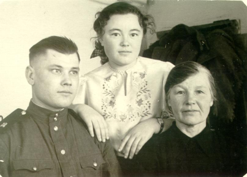
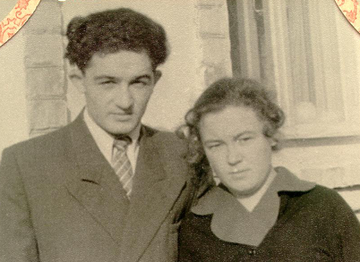
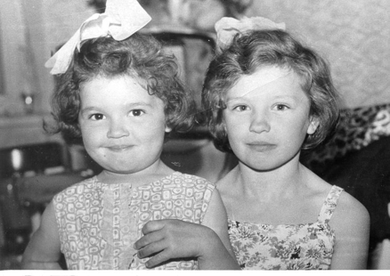

Сегодня я хочу рассказать о тете Вере. Она, по правде говоря, тетка не моя, а моей мамы. Вообще у мамы было два дяди и две тети со стороны матери и три дяди со стороны отца. Когда умер папа, она прибежала именно к тете Вере (это в Уфе). И у нее же она жила, когда заканчивала школу (уже в Ташкенте).
Разница в возрасте у них была невелика, обе они были невысокие, стройные, у каждой было по одной юбке и паре блузок… Их считали сестрами, а они были подругами.
С 17 лет тетя Вера работала в госпитале, всю войну прошла с Сашей – Александром Михайловичем (он был казначеем полка), вышла за него замуж, и после войны они осели в Уфе у его родителей, а потом уехали в Ташкент.
Муж тети Веры был старше нее, человек суровый и требовательный (это он не отпустил мою маму учиться). У них не было детей, и вскоре после замужества Надюши, как она всю жизнь называла мою маму, тетя Вера рассталась с Сашей, несмотря на то, что он был болен, снова вышла замуж, родила и вырастила двух детей – Вениамина и Маргариту.
Пока папа работал на Южном Урале, мы часто виделись – до Актюбинска было недалеко. Помню их большую комнату в полуподвале, огромный закрытый двор без единой травинки, помню, как бегали на речку, которая летом в сильную жару высыхала так, что и купаться было невозможно. А еще помню, как свободно расхаживал по тротуару верблюд… Тетя Вера работала в аптеке, и когда мы прибегали к ней, она угощала нас гематогеном…
Венька рос шалопаем, плохо учился и доставлял немало хлопот. Я никогда не видела их отца, и только много позже из разговоров старших поняла, что Виктор из-за рассказанного анекдота был задержан и больше его никто никогда не видел…
Всю жизнь тетя Вера казнила себя за то, что оставила больного мужа, и считала наказанием за это то, что сын Вениамин вырос непутевым и молодым умер в тюрьме от туберкулеза.
Рита летом часто гостила у нас, а еще приезжал Женька Соболев, сын друзей папы и мамы, и было очень весело. Жаль, что потом мы переехали, и только мама по-прежнему навещала тетю Веру.
Рита хорошо училась, закончила педагогический институт, вышла замуж (Юра был комсомольским работником), вырастила двух дочерей – Ирину и Инну.
Мама рассказывала, что в преклонном возрасте у тети Веры ампутировали ногу, но, как могла, она продолжала помогать семье дочери.
Мне всегда хотелось встретиться с ними, но так сложилось, что не сохранилась в моей памяти фамилия Риты по мужу и потерялся адрес, и спросить не у кого…
Алла Басс (Дворжицкая-Ларина).
Фотографии


